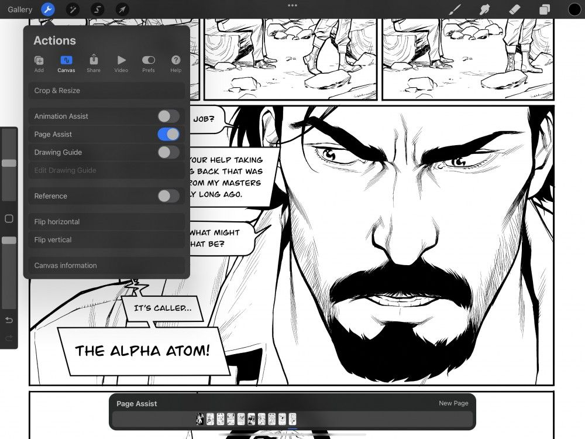
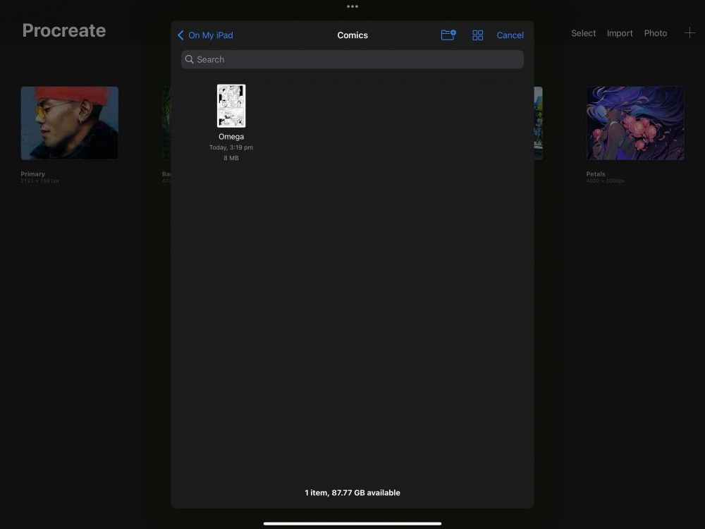
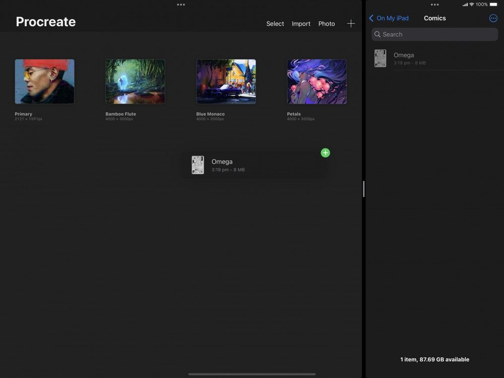

📖 Đã dịch sang tiếng Việt. Thuật ngữ chuyên môn giữ tiếng Anh — rê chuột để xem nghĩa (tooltip).
Interface
Page Assist (trợ lý trang) lấy toàn bộ tính năng của Procreate và cho phép bạn dùng chúng trong một giao diện nhiều trang gọn gàng.
Kích hoạt
Gọi giao diện Page Assist qua Actions, QuickMenu, hoặc bằng cách nhập một PDF.
Menu Actions
Trong một tác phẩm, hãy chạm nút hình cái cờ lê ở góc trên bên trái màn hình để mở menu Actions. Chạm Canvas (khung vẽ), rồi chạm công tắc Page Assist.
Giao diện Page Assist hiện sẽ hoạt động.
Nếu bạn đang mở một tác phẩm có nhiều lớp và kích hoạt Page Assist, các lớp này sẽ trở thành từng trang riêng biệt.
Để tắt giao diện Page Assist, hãy lặp lại thao tác trên.


Nhập một tệp PDF đơn lẻ vào Procreate sẽ tự động kích hoạt Page Assist. Bạn có thể nhập PDF vào Procreate theo ba cách khác nhau.
AirDrop
Dùng AirDrop trên một thiết bị Apple khác để gửi tệp PDF sang iPad sẽ mở bảng ‘Open with…’ (Mở bằng…) của AirDrop trên iPad. Chọn Procreate trong danh sách ứng dụng, và tệp sẽ được nhập vào Thư viện (Gallery) của bạn.
Nếu bạn đang ở Gallery và nhập một tệp PDF đơn lẻ, tệp sẽ tự động mở trong Page Assist.
Nhập từ Files
Chạm Import (nhập) ở menu trên cùng bên phải của Gallery để mở ứng dụng Files. Chuyển đến thư mục lưu PDF của bạn, và chạm vào tệp PDF để nhập.
Nếu bạn đang ở Gallery và nhập một tệp PDF đơn lẻ, tệp sẽ tự động mở trong Page Assist.
Pro Tip
You can also export Page Assist documents back to PDF by tapping Actions > Share > PDF under Share Layers. This is handy when sharing marked up PDF documents, creating notes, or book and comic pages. Find out more about sharing Page Assist documents in Share located in the Layers section of this Handbook.

Kéo thả từ Files
Giữ một tệp PDF để nhặt nó lên, rồi kéo vào Procreate.
Nếu bạn đang ở Gallery và nhập một tệp PDF đơn lẻ, tệp sẽ tự động mở trong Page Assist.

Heads Up
If you're importing multiple PDF files into Procreate, the files will not automatically open but will save to your gallery. Also, the file will not automatically open if you already have a Procreate artwork.
Màn hình Page Assist
Page Assist hoạt động giống hệt Procreate, ngoại trừ việc có nhiều khung vẽ trong một tài liệu duy nhất.
Khi bạn gọi Page Assist, màn hình sẽ thu phóng để hiển thị toàn bộ tác phẩm.
Tất cả lớp hiện có trong tác phẩm giờ được hiển thị trong Page Assist thành các trang trong Timeline.
Khung vẽ của bạn hiển thị trang đang chọn.
Vẽ và tô lên khung vẽ như bình thường. Các thay đổi của bạn sẽ ảnh hưởng đến trang đang chọn trong Timeline.
Timeline (dòng thời gian)
Timeline thể hiện mỗi trang của tài liệu Page Assist thành một hình thu nhỏ.
Hãy coi nó như bảng Layers bị xoay ngang. Lớp dưới cùng của bảng Layers sẽ là trang tận cùng bên trái trong Timeline. Điều này thể hiện các trang theo thứ tự thời gian từ trái sang phải.
Bạn có thể di chuyển trong Timeline theo vài cách:
- Chạm một frames để nhảy đến nó
- Kéo Timeline qua lại
- Hất Timeline để cuộn nhanh
Trang đang chọn của bạn luôn được gạch chân màu xanh.
Trang mới
Thêm một trang trắng vào tài liệu.
Chạm New Page (trang mới) bất cứ lúc nào để thêm một trang trắng bên phải trang hiện tại trong Timeline.
Bảng Layers trong Page Assist hoạt động hơi khác so với lớp tiêu chuẩn trong một tác phẩm Procreate.
Giống như Timeline, Layers hiển thị mỗi trang của tài liệu thành một hình thu nhỏ.
Lớp dưới cùng của bảng Layers sẽ là trang tận cùng bên trái trong Timeline. Điều này thể hiện các trang theo thứ tự thời gian từ dưới lên trên.
Thêm một lớp mới trong bảng Layers sẽ thêm một trang mới vào tài liệu và vào Timeline.
QuickMenu
Dùng QuickMenu để gọi Page Assist, di chuyển tới lui trong tài liệu và thêm trang mới.
Có ba tùy chọn QuickMenu cho Page Assist giúp tăng tốc quy trình của bạn.
Page Assist (trợ lý trang)
Tùy chọn Page Assist trong QuickMenu gán một nút để bật và tắt Page Assist.
Trang kế
Tùy chọn Next Page trong QuickMenu gán một nút để tiến một trang trong Timeline của Page Assist. Nếu bạn đang ở trang cuối cùng tận cùng bên phải Timeline, dùng Next Page cũng sẽ tạo một trang trắng mới.
Trang trước
Tùy chọn Previous Page trong QuickMenu gán một nút để lùi một trang trong Timeline của Page Assist.
Để tìm hiểu cách gán nút trong QuickMenu, xem QuickMenu trong phần Interface & Gestures của Handbook.
Still have questions?
If you didn't find what you're looking for, explore our video resources on YouTube or contact us directly. We’re always happy to help.